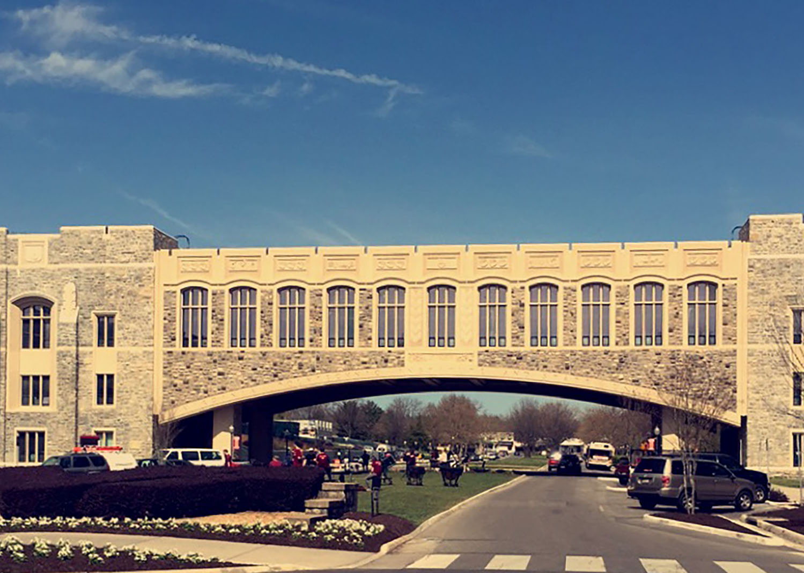

My Major:
After spending almost two full years at Virginia Tech, I realized while in my second semester as a sophomore, that science was not my passion. In the spring of 2018, I chose to make a change and decided to enter the College of Liberal Arts and Human Sciences. I had started to realize I enjoyed reading and writing more than labs and calculations after I took my freshman year English requirement with my current Creative Writing teacher. After almost a complete year in the College of Liberal Arts and Human Sciences, I can confidently say that I have found a passion in my new major Communication Studies. When I tell people my major is Communication Studies, they tend to write me off thinking all I learn about is how to talk to people. I am here to tell you that that’s not the case. I encourage you to take the time today to explore and see just what a major in communication entails.
